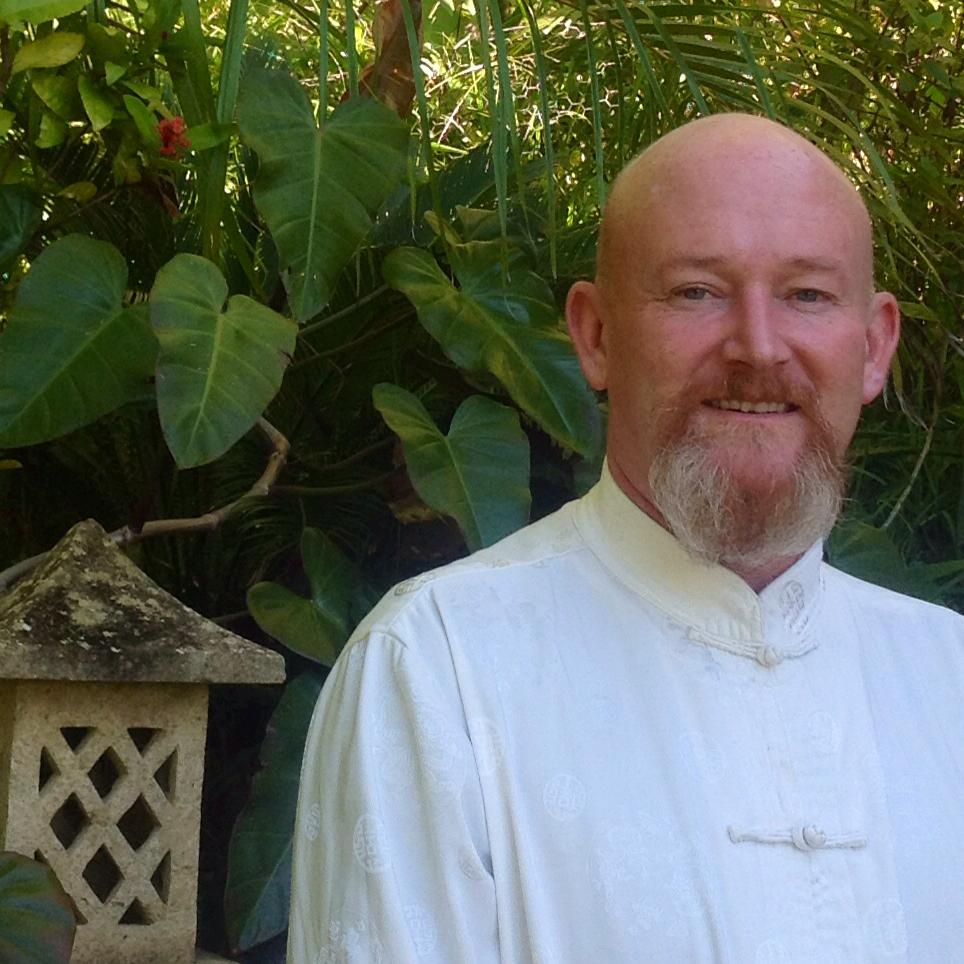

MEET DR GIDEON LE ROUX
Dr Gideon is a specialist in Acupuncture, Tai Qi, Qi Gong and Tuina(Traditional Chinese Medical Massage).
He treats clients on a case-by-case basis, using ancient medicine as a modern choice – drawing from his vast knowledge and applying a range of different modalities and techniques. He has 20 years of experience in delivering individual private sessions, has traveled extensively and helped clients in 4 continents.
Dr Gideon starts all treatments with an initial consultation, during which time a full medical and family history is taken and a discussion is had with the client regarding their outcome expectations and their primary complaints. Via a range of diagnostic techniques, he formulates a working diagnosis after which a treatment plan is discussed with the client, tailored to their specific needs and resources. Gideon instils confidence in his clients, supporting and guiding them to uncover the deeper hidden reasons for their discomfort. By resolving blockages on multiple levels, homeostasis is achieved and the path to extraordinary health is explored. Confidentiality is assured.
Gideon has worked with clients from all walks of life and various nationalities / ethnicities, diagnosing and treating a vast array of conditions. These treatments have resulted in lasting impacts, not just on health and well-being on a physical level but also on a mental and spiritual level. He actively avoids self-promotion or ‘guru-ship’, always encouraging his students and clients to find their own path and graduate from his presence.
Qualifications:
NZSATCM BSc Health Science
National Diploma Acupuncture
Diploma Tuina & Qi Gong
Clinic and Practice Management certified
Reiki Master
Advanced Studies:
Feng Shui / Face Reading / 5-Element Acupuncture / Sujok
My Books:
Mission
To actively help alleviate suffering of physical, emotional and spiritual impairment by means of treatment and care utilising the skills and techniques acquired, while learning how to do this more and better.
Vision
To discover the beauty in everything, to let the light in, and to explore the values that uplift us into higher dimensions.